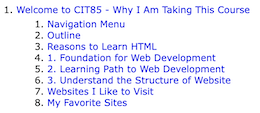

Outline

HTML is the foundational language of the World Wide Web. It's the markup language used to structure content on the internet. Understanding HTML is the first step in web development.
Learning HTML is the first step in a broader journey into web development. Once you master HTML, you can progress to more advanced languages and technologies, such as CSS for styling and JavaScript for interactivity.
HTML is used to structure the content on web pages. It defines the layout and hierarchy of elements, including headings, paragraphs, lists, links, and more, which helps organize information for readability and usability.
This site could help me to find the best answer to my technical question, also help others answer theirs
This site is a community where coders share, stay up-to-date and grow their careers.
This site could help me to find the source code of 3rd parties.